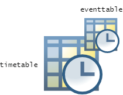

extractevents
Syntax
Description
The extractevents function extracts data from a timetable to
create an event table. An event table is a timetable of
events. For more information on event tables, see eventtable.
When you attach an event table to a timetable, it enables you to find and label rows in
the timetable that occur during events. To attach an event table to a timetable, assign it to
the Events property of the timetable.

ET = extractevents(TT,labels)labels. The labels input argument must be a
categorical vector. The number of elements in labels
must be the same as the number of rows of the input timetable. The category names in
labels become event labels in a variable of the output event
table.
If any row of labels has a missing value, then the corresponding row
time of TT is not included in the output event table. In a
categorical array, missing values are elements that belong to an
undefined category. You can use missing values in labels to exclude rows
of the input timetable from the output event table.
ET = extractevents(___,Name=Value)
Event lengths and event end times are mutually exclusive. You can specify event lengths or event end times, but not both.
[
also returns a modified copy of the input timetable. The output timetable does not include
input timetable variables that you specify as the variables containing event labels, event
lengths, event end times, or event data, unless you also specify the
ET,TT2] = extractevents(___)PreserveEventVariables name-value argument as
true.
Examples
Import a timetable from a file. Then extract an event table using row times from the timetable rows that you specify. You can also specify additional information such as event labels.
To import a timetable from a comma-separated values (CSV) file, use the readtimetable function. The first column that has dates or times is the source of the row times of the timetable.
TT = readtimetable("outages.csv",TextType="string")
TT=1468×5 timetable
OutageTime Region Loss Customers RestorationTime Cause
________________ ___________ ______ __________ ________________ _________________
2002-02-01 12:18 "SouthWest" 458.98 1.8202e+06 2002-02-07 16:50 "winter storm"
2003-01-23 00:49 "SouthEast" 530.14 2.1204e+05 NaT "winter storm"
2003-02-07 21:15 "SouthEast" 289.4 1.4294e+05 2003-02-17 08:14 "winter storm"
2004-04-06 05:44 "West" 434.81 3.4037e+05 2004-04-06 06:10 "equipment fault"
2002-03-16 06:18 "MidWest" 186.44 2.1275e+05 2002-03-18 23:23 "severe storm"
2003-06-18 02:49 "West" 0 0 2003-06-18 10:54 "attack"
2004-06-20 14:39 "West" 231.29 NaN 2004-06-20 19:16 "equipment fault"
2002-06-06 19:28 "West" 311.86 NaN 2002-06-07 00:51 "equipment fault"
2003-07-16 16:23 "NorthEast" 239.93 49434 2003-07-17 01:12 "fire"
2004-09-27 11:09 "MidWest" 286.72 66104 2004-09-27 16:37 "equipment fault"
2004-09-05 17:48 "SouthEast" 73.387 36073 2004-09-05 20:46 "equipment fault"
2004-05-21 21:45 "West" 159.99 NaN 2004-05-22 04:23 "equipment fault"
2002-09-01 18:22 "SouthEast" 95.917 36759 2002-09-01 19:12 "severe storm"
2003-09-27 07:32 "SouthEast" NaN 3.5517e+05 2003-10-04 07:02 "severe storm"
2003-11-12 06:12 "West" 254.09 9.2429e+05 2003-11-17 02:04 "winter storm"
2004-09-18 05:54 "NorthEast" 0 0 NaT "equipment fault"
⋮
To create an event table from TT, use the extractevents function. You can specify rows of the timetable using row times, row numbers, logical values, or timerange or withtol subscripts.
Extract the first five rows of the input timetable as an event table. The output event table has five event times, which are equal to the row times of the first five rows of the timetable. The event table has no variables because this extractevents call specifies only rows.
ET = extractevents(TT,1:5)
ET =
5×0 empty eventtable
Event Labels Variable: <unset>
Event Lengths Variable: <instantaneous>
OutageTime
________________
2002-02-01 12:18
2003-01-23 00:49
2003-02-07 21:15
2004-04-06 05:44
2002-03-16 06:18
Add event labels as a variable of the event table. Specify the source of event labels for the output event table as the Cause variable of the input timetable.
ET = extractevents(TT,1:5,EventLabelsVariable="Cause")ET = 5×1 eventtable
Event Labels Variable: Cause
Event Lengths Variable: <instantaneous>
OutageTime Cause
________________ _________________
2002-02-01 12:18 "winter storm"
2003-01-23 00:49 "winter storm"
2003-02-07 21:15 "winter storm"
2004-04-06 05:44 "equipment fault"
2002-03-16 06:18 "severe storm"
Create an event table from the rows of a timetable that are within a time range.
Import a timetable from a CSV file.
TT = readtimetable("outages.csv",TextType="string")
TT=1468×5 timetable
OutageTime Region Loss Customers RestorationTime Cause
________________ ___________ ______ __________ ________________ _________________
2002-02-01 12:18 "SouthWest" 458.98 1.8202e+06 2002-02-07 16:50 "winter storm"
2003-01-23 00:49 "SouthEast" 530.14 2.1204e+05 NaT "winter storm"
2003-02-07 21:15 "SouthEast" 289.4 1.4294e+05 2003-02-17 08:14 "winter storm"
2004-04-06 05:44 "West" 434.81 3.4037e+05 2004-04-06 06:10 "equipment fault"
2002-03-16 06:18 "MidWest" 186.44 2.1275e+05 2002-03-18 23:23 "severe storm"
2003-06-18 02:49 "West" 0 0 2003-06-18 10:54 "attack"
2004-06-20 14:39 "West" 231.29 NaN 2004-06-20 19:16 "equipment fault"
2002-06-06 19:28 "West" 311.86 NaN 2002-06-07 00:51 "equipment fault"
2003-07-16 16:23 "NorthEast" 239.93 49434 2003-07-17 01:12 "fire"
2004-09-27 11:09 "MidWest" 286.72 66104 2004-09-27 16:37 "equipment fault"
2004-09-05 17:48 "SouthEast" 73.387 36073 2004-09-05 20:46 "equipment fault"
2004-05-21 21:45 "West" 159.99 NaN 2004-05-22 04:23 "equipment fault"
2002-09-01 18:22 "SouthEast" 95.917 36759 2002-09-01 19:12 "severe storm"
2003-09-27 07:32 "SouthEast" NaN 3.5517e+05 2003-10-04 07:02 "severe storm"
2003-11-12 06:12 "West" 254.09 9.2429e+05 2003-11-17 02:04 "winter storm"
2004-09-18 05:54 "NorthEast" 0 0 NaT "equipment fault"
⋮
Create a time range that covers the first six months of the year 2002.
TR = timerange("2002-01-01","2002-06-30")
TR = timetable timerange subscript: Select timetable rows with times in the half-open interval: Starting at, including: 01-Jan-2002 00:00:00 Ending at, but excluding: 30-Jun-2002 00:00:00 See Select Times in Timetable.
Extract an event table from the timetable rows that fall within the specified time range. Specify the source of the event labels as the Cause variable of the input timetable.
ET = extractevents(TT,TR,EventLabelsVariable="Cause")ET = 12×1 eventtable
Event Labels Variable: Cause
Event Lengths Variable: <instantaneous>
OutageTime Cause
________________ __________________
2002-02-01 12:18 "winter storm"
2002-03-16 06:18 "severe storm"
2002-06-06 19:28 "equipment fault"
2002-03-26 01:59 "winter storm"
2002-04-20 16:46 "unknown"
2002-05-18 11:04 "unknown"
2002-05-20 10:57 "unknown"
2002-03-05 17:53 "wind"
2002-05-27 09:44 "wind"
2002-05-08 20:34 "thunder storm"
2002-06-02 16:11 "energy emergency"
2002-06-17 23:01 "thunder storm"
Extract an event table from rows of a timetable that meet a condition. When you extract the events, also specify event end times that make the events into interval events.
Import a timetable from a CSV file. The timetable lists a series of power outages. The data includes number of customers affected by the power outages as well as the times when the power outages begin and the times when power is restored.
TT = readtimetable("outages.csv",TextType="string")
TT=1468×5 timetable
OutageTime Region Loss Customers RestorationTime Cause
________________ ___________ ______ __________ ________________ _________________
2002-02-01 12:18 "SouthWest" 458.98 1.8202e+06 2002-02-07 16:50 "winter storm"
2003-01-23 00:49 "SouthEast" 530.14 2.1204e+05 NaT "winter storm"
2003-02-07 21:15 "SouthEast" 289.4 1.4294e+05 2003-02-17 08:14 "winter storm"
2004-04-06 05:44 "West" 434.81 3.4037e+05 2004-04-06 06:10 "equipment fault"
2002-03-16 06:18 "MidWest" 186.44 2.1275e+05 2002-03-18 23:23 "severe storm"
2003-06-18 02:49 "West" 0 0 2003-06-18 10:54 "attack"
2004-06-20 14:39 "West" 231.29 NaN 2004-06-20 19:16 "equipment fault"
2002-06-06 19:28 "West" 311.86 NaN 2002-06-07 00:51 "equipment fault"
2003-07-16 16:23 "NorthEast" 239.93 49434 2003-07-17 01:12 "fire"
2004-09-27 11:09 "MidWest" 286.72 66104 2004-09-27 16:37 "equipment fault"
2004-09-05 17:48 "SouthEast" 73.387 36073 2004-09-05 20:46 "equipment fault"
2004-05-21 21:45 "West" 159.99 NaN 2004-05-22 04:23 "equipment fault"
2002-09-01 18:22 "SouthEast" 95.917 36759 2002-09-01 19:12 "severe storm"
2003-09-27 07:32 "SouthEast" NaN 3.5517e+05 2003-10-04 07:02 "severe storm"
2003-11-12 06:12 "West" 254.09 9.2429e+05 2003-11-17 02:04 "winter storm"
2004-09-18 05:54 "NorthEast" 0 0 NaT "equipment fault"
⋮
Extract an event table from the timetable rows for power outages that affected more than 1,500,000 customers. Label the events as "High Customer Impact". Also include event end times in the event table by specifying their source as the RestorationTime variable of the input timetable.
ET = extractevents(TT,TT.Customers > 1.5e6, ... EventLabels="High Customer Impact", ... EventEndsVariable="RestorationTime")
ET = 14×2 eventtable
Event Labels Variable: EventLabels
Event Ends Variable: RestorationTime
OutageTime RestorationTime EventLabels
________________ ________________ ______________________
2002-02-01 12:18 2002-02-07 16:50 "High Customer Impact"
2002-12-10 10:45 2002-12-11 18:06 "High Customer Impact"
2002-05-20 10:57 2002-05-21 15:22 "High Customer Impact"
2004-09-20 12:37 2004-10-02 06:00 "High Customer Impact"
2003-08-15 19:06 2003-08-16 05:13 "High Customer Impact"
2004-09-13 11:51 2004-09-15 23:41 "High Customer Impact"
2006-10-21 00:12 2006-10-21 12:38 "High Customer Impact"
2006-12-28 14:04 2007-01-04 14:26 "High Customer Impact"
2006-07-16 00:05 2006-07-27 14:42 "High Customer Impact"
2006-01-01 11:54 2006-01-11 01:21 "High Customer Impact"
2008-09-07 23:35 2008-09-19 17:19 "High Customer Impact"
2010-01-24 18:47 2010-01-30 01:43 "High Customer Impact"
2010-05-17 09:10 2010-05-18 22:43 "High Customer Impact"
2010-07-05 21:07 2010-07-09 03:33 "High Customer Impact"
Attach the event table to the timetable. When you display the timetable, you can see event labels from the event table at the timetable rows whose row times match event times.
TT.Properties.Events = ET
TT=1468×5 timetable with 14 events
OutageTime Region Loss Customers RestorationTime Cause
________________ ___________ ______ __________ ________________ _________________
High Customer Impact 2002-02-01 12:18 "SouthWest" 458.98 1.8202e+06 2002-02-07 16:50 "winter storm"
2003-01-23 00:49 "SouthEast" 530.14 2.1204e+05 NaT "winter storm"
2003-02-07 21:15 "SouthEast" 289.4 1.4294e+05 2003-02-17 08:14 "winter storm"
2004-04-06 05:44 "West" 434.81 3.4037e+05 2004-04-06 06:10 "equipment fault"
2002-03-16 06:18 "MidWest" 186.44 2.1275e+05 2002-03-18 23:23 "severe storm"
2003-06-18 02:49 "West" 0 0 2003-06-18 10:54 "attack"
2004-06-20 14:39 "West" 231.29 NaN 2004-06-20 19:16 "equipment fault"
2002-06-06 19:28 "West" 311.86 NaN 2002-06-07 00:51 "equipment fault"
2003-07-16 16:23 "NorthEast" 239.93 49434 2003-07-17 01:12 "fire"
High Customer Impact 2004-09-27 11:09 "MidWest" 286.72 66104 2004-09-27 16:37 "equipment fault"
2004-09-05 17:48 "SouthEast" 73.387 36073 2004-09-05 20:46 "equipment fault"
2004-05-21 21:45 "West" 159.99 NaN 2004-05-22 04:23 "equipment fault"
2002-09-01 18:22 "SouthEast" 95.917 36759 2002-09-01 19:12 "severe storm"
2003-09-27 07:32 "SouthEast" NaN 3.5517e+05 2003-10-04 07:02 "severe storm"
2003-11-12 06:12 "West" 254.09 9.2429e+05 2003-11-17 02:04 "winter storm"
2004-09-18 05:54 "NorthEast" 0 0 NaT "equipment fault"
⋮
When you use extractevents to create an event table from a timetable, you can attach the event table to the original timetable. But you can also attach it to the modified copy of the timetable that is returned as the second output of extractevents. The modified copy of the timetable does not include the input timetable variables that were used as variables in the event table.
Import a timetable from a CSV file. Display the first five rows.
TT = readtimetable("outages.csv",TextType="string"); TTdisplay = head(TT,5)
TTdisplay=5×5 timetable
OutageTime Region Loss Customers RestorationTime Cause
________________ ___________ ______ __________ ________________ _________________
2002-02-01 12:18 "SouthWest" 458.98 1.8202e+06 2002-02-07 16:50 "winter storm"
2003-01-23 00:49 "SouthEast" 530.14 2.1204e+05 NaT "winter storm"
2003-02-07 21:15 "SouthEast" 289.4 1.4294e+05 2003-02-17 08:14 "winter storm"
2004-04-06 05:44 "West" 434.81 3.4037e+05 2004-04-06 06:10 "equipment fault"
2002-03-16 06:18 "MidWest" 186.44 2.1275e+05 2002-03-18 23:23 "severe storm"
Then extract an event table from the timetable. Extract the timetable rows where the cause of the outage does not contain the word "storm". Specify the timetable variables that have the event labels and the event end times. The output event table includes these two variables. The second output is a copy of TT that does not include the RestorationTime or Cause variables. You might not need to keep these variables in the output timetable because you have copies of them in the event table.
[ET,TTcopy] = extractevents(TT,~contains(TT.Cause,"storm"), ... EventLabelsVariable="Cause", ... EventEndsVariable="RestorationTime"); ETdisplay = head(ET,5)
ETdisplay = 5×2 eventtable
Event Labels Variable: Cause
Event Ends Variable: RestorationTime
OutageTime RestorationTime Cause
________________ ________________ _________________
2004-04-06 05:44 2004-04-06 06:10 "equipment fault"
2003-06-18 02:49 2003-06-18 10:54 "attack"
2004-06-20 14:39 2004-06-20 19:16 "equipment fault"
2002-06-06 19:28 2002-06-07 00:51 "equipment fault"
2003-07-16 16:23 2003-07-17 01:12 "fire"
TTcopydisplay = head(TTcopy,5)
TTcopydisplay=5×3 timetable
OutageTime Region Loss Customers
________________ ___________ ______ __________
2002-02-01 12:18 "SouthWest" 458.98 1.8202e+06
2003-01-23 00:49 "SouthEast" 530.14 2.1204e+05
2003-02-07 21:15 "SouthEast" 289.4 1.4294e+05
2004-04-06 05:44 "West" 434.81 3.4037e+05
2002-03-16 06:18 "MidWest" 186.44 2.1275e+05
To specify timetable variables that become event data variables in the output event table, specify the EventDataVariables name-value argument.
[ET,TTcopy] = extractevents(TT,~contains(TT.Cause,"storm") ,... EventLabelsVariable="Cause", ... EventEndsVariable="RestorationTime", ... EventDataVariables="Region"); ETdisplay = head(ET,5)
ETdisplay = 5×3 eventtable
Event Labels Variable: Cause
Event Ends Variable: RestorationTime
OutageTime RestorationTime Cause Region
________________ ________________ _________________ ___________
2004-04-06 05:44 2004-04-06 06:10 "equipment fault" "West"
2003-06-18 02:49 2003-06-18 10:54 "attack" "West"
2004-06-20 14:39 2004-06-20 19:16 "equipment fault" "West"
2002-06-06 19:28 2002-06-07 00:51 "equipment fault" "West"
2003-07-16 16:23 2003-07-17 01:12 "fire" "NorthEast"
TTcopydisplay = head(TTcopy,5)
TTcopydisplay=5×2 timetable
OutageTime Loss Customers
________________ ______ __________
2002-02-01 12:18 458.98 1.8202e+06
2003-01-23 00:49 530.14 2.1204e+05
2003-02-07 21:15 289.4 1.4294e+05
2004-04-06 05:44 434.81 3.4037e+05
2002-03-16 06:18 186.44 2.1275e+05
To attach the event table to the modified copy of the timetable, assign it to the Events property of the timetable.
TTcopy.Properties.Events = ET; TTcopydisplay = head(TTcopy,5)
TTcopydisplay=5×2 timetable with 784 events
OutageTime Loss Customers
________________ ______ __________
2002-02-01 12:18 458.98 1.8202e+06
2003-01-23 00:49 530.14 2.1204e+05
2003-02-07 21:15 289.4 1.4294e+05
equipment fault 2004-04-06 05:44 434.81 3.4037e+05
2002-03-16 06:18 186.44 2.1275e+05
Input Arguments
Input timetable.
Event labels, specified as a categorical vector. The number of
elements in the labels input argument must be the same as the number
of rows of the input timetable. The category names in labels become
event labels in a variable of the output event table. The event table has a row for
every row time in the input timetable, except for any row where
labels has a missing value.
Name-Value Arguments
Specify optional pairs of arguments as
Name1=Value1,...,NameN=ValueN, where Name is
the argument name and Value is the corresponding value.
Name-value arguments must appear after other arguments, but the order of the
pairs does not matter.
Example: ET = extractevents(TT,TT.Var1 > 10,EventLabels="High")
extracts timetable rows where TT.Var1 is greater than 10 and returns them
as an event table with High event labels.
Event labels, specified as a scalar or vector. The scalar or vector can have any
data type except for datetime, duration,
calendarDuration, table, or
timetable. If this argument is a vector, then it must have the
same number of elements as the rows input argument.
Example: ET = extractevents(TT,rows,EventLabels=cause) creates
an event table from timetable TT and specifies vector
cause as the source of the event labels in
ET.
Variable of the input timetable that has event labels, specified as a string
scalar, character vector, integer, logical array, or pattern
scalar. The event labels can have any data type except for
datetime, duration,
calendarDuration, table, or
timetable.
If you specify a logical array, then it must have one
truevalue that specifies one variable of the input timetable.If you specify a
patternscalar, then the name of the first variable of the input timetable that it matches becomes the value ofEventLabelsVariable.
Example: ET = extractevents(TT,rows,EventLabelsVariable="Var1")
creates an event table from timetable TT and specifies the variable
named Var1 in TT as the source of the event
labels in ET.
Lengths of time that events last, specified as a duration or
calendarDuration scalar or vector. If this argument is a vector,
then it must have the same number of elements as the rows input
argument.
If the row times of the input timetable are
datetimevalues, then the event lengths can be eitherdurationorcalendarDurationvalues.If the row times of the input timetable are
durationvalues, then the event lengths can be onlydurationvalues.
If you specify this name-value argument, then you cannot specify either the
EventEnds or the EventEndsVariable
arguments.
Example: ET = extractevents(TT,rows,EventLengths=eventDurations)
creates an event table from timetable TT and specifies vector
eventDurations as the source of the event lengths in
ET.
Variable of the input timetable that has event lengths, specified as a string
scalar, character vector, integer, logical array, or pattern
scalar.
If you specify a logical array, then it must have one
truevalue that specifies one variable of the input timetable.If you specify a
patternscalar, then the name of the first variable of the input timetable that it matches becomes the value ofEventLengthsVariable.
The event lengths must be duration or
calendarDuration values.
If the row times of the input timetable are
datetimevalues, then the event lengths in the variable specified byEventLengthsVariablecan be eitherdurationorcalendarDurationvalues.If the row times of the input timetable are
durationvalues, then the event lengths in the variable specified byEventLengthsVariablecan be onlydurationvalues.
If you specify this name-value argument, then you cannot specify either the
EventEnds or the EventEndsVariable
argument.
Example: ET =
extractevents(TT,rows,EventLengthsVariable="EventDurations") creates an
event table from timetable TT and specifies the variable named
"EventDurations" in TT as the source of the
event lengths in ET.
Times at which events end, specified as a datetime or
duration scalar or vector. If this argument is a vector, then it
must have the same number of elements as the rows input argument.
Also, the data type of this argument must match the data type of the vector of row
times of the input timetable. For example, if the timetable row times are
datetime values, then you must specify
EventEnds as a datetime vector.
If you specify this name-value argument, then you cannot specify either the
EventLengths or the EventLengthsVariable
arguments.
Example: ET = extractevents(TT,rows,EventEnds=endTimes) creates
an event table from timetable TT and specifies vector
endTimes as the source of the end times of the events in
ET.
Variable of the input timetable that has event ends, specified as a string scalar,
character vector, integer, logical array, or pattern scalar.
If you specify a logical array, then it must have one
truevalue that specifies one variable of the input timetable.If you specify a
patternscalar, then the name of the first variable of the input timetable that it matches becomes the value ofEventEndsVariable.
The event ends must be datetime or duration
values. Also, the event ends and the event times must have the same data type. For
example, if the input timetable has row times that are datetime
values, then you must specify EventEndsVariable as a variable that
is a datetime vector.
If you specify this name-value argument, then you cannot specify either the
EventLengths or the EventLengthsVariable
argument.
Example: ET =
extractevents(TT,rows,EventEndsVariable="EndTimes") creates an event table
from timetable TT and specifies the variable named
"EndTimes" in TT as the source of the end
times of the events in ET.
Variables of the input timetable that become variables of the output event table,
specified as a string array, character vector, integer array, logical array, or
pattern scalar. These variables do not label events or specify
their ends or durations. They are data variables that extractevents
copies to the output event table.
If you specify a logical array, then it must have a
truevalue for every variable that is copied to the event table.If you specify a
patternscalar, thenEventDataVariablesis an array of the timetable variable names that match the pattern.
Example: ET =
extractevents(TT,rows,EventDataVariables=["Var1","Var2","Var3"]) creates
an event table from timetable TT and specifies that the variables
named "Var1", "Var2", and
"Var3" in TT become variables in the output
event table ET.
Preserve data variables in the second output, specified as a numeric or logical
1 (true) or 0
(false).
Example: [ET,TT2] =
extractevents(TT,rows,EventDataVariables=["Var1","Var2","Var3"],PreserveEventVariables=true)
specifies that the variables named "Var1",
"Var2", and "Var3" are data variables in
ET and are preserved in TT2.
Output Arguments
Event table.
Modified copy of the input timetable, returned as a timetable.
The copy does not include input timetable variables that you specify using the
EventDataVariables name-value argument, unless you also specify the
PreserveEventVariables argument as true.
Version History
Introduced in R2023a